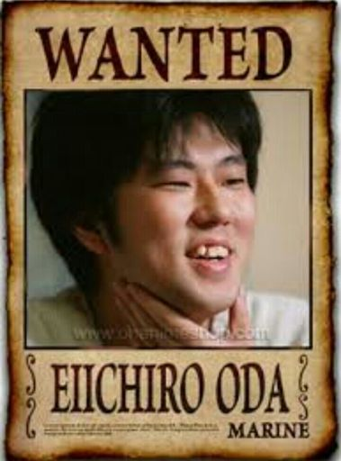

Eiichiro Oda, born on January 1, 1975, in Kumamoto, Japan, is the genius behind the legendary manga series "One Piece." Inspired by classic adventure stories and pirate tales, Oda created a world filled with excitement, mystery, and heart, capturing the imagination of millions worldwide.
Since its debut in 1997, "One Piece" has become one of the best-selling manga series in history, thanks to Oda's unique storytelling, unforgettable characters, and unparalleled creativity. Join us as we explore the mind of a man whose dreams and determination continue to inspire readers and fans globally!
